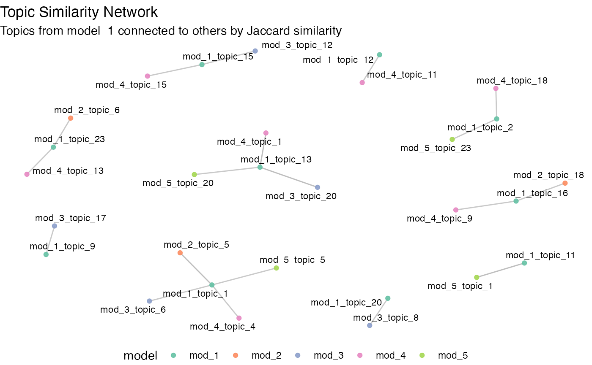

Find stable topics in STM with Jaccard similarity
Source:vignettes/find_stable_topics-jaccard.Rmd
find_stable_topics-jaccard.RmdThis vignette shows how to use topicl to find stable
(reproducible) topics with Jaccard similarity. This method is presented
in (Koltsov et al., 2018), but can be shortly summarized as follows.
A stable topic is a topic that persists across fits of a topic model to the data. Thus, keeping model parameters fixed, a stable topic must appear in a majority of fits. Across fits, we compare topics to each other to test whether a given pair is the same. For comparison, we use compute Jaccard similarity on N top-words for a topic. Papers by Koltosov and colleagues advise fitting at least five models and consider a given pair of topics identical if their Jaccard similarity is >= 90%. Then, if a stable topic persisted across at least 3 out of 5 model runs, you can consider this topic stable.
In this vignette, we will fit five STM models to
poliblog5k (see ?stm::poliblog5k for details)
and consider how many topics persists using topicl.
fit_stm specifies STM parameters. We increase the
maximum number of iterations for the EM algorithm and ensure that each
iteration is performed with max_it = 1000 and
emtol = 0 - see ?stm for details. In my
experience, with an increased number of iterations on these data, topic
similarity across fits also increases. I cannot say if
K = 25 is optimal for these data, but this number of topics
is used in STM documentation.
With <random.org>, we generated five random seeds
for each model.
fit_stm <- function(seed) {
K = 25
max_it = 1000
emtol = 0
mod <- stm(poliblog5k.docs,
poliblog5k.voc, K=K,
data=poliblog5k.meta,
max.em.its=max_it,
emtol = emtol,
init.type="Random",
seed = seed,
verbose = F)
return(mod)
}
seeds <- c(9934,9576,1563,3379,8505)With furrr::future_map(), we fit five models with
different seeds in parallel. Given the high number of iterations, it can
take up to 40 minutes.
tic()
plan(multisession, workers = 5) # toggle multiple parallel processes
mods <- future_map(seeds, fit_stm,
.options = furrr_options(seed=T))
plan(sequential) # toggle back to sequential
toc()
#> 1069.351 sec elapsedWe use topicl::compare_solutions() to calculate topic
similarity on the level of depth = 10 top terms for a
topic. By default, top terms are produced by ranking term probabilities.
Please note that (Koltsov et al., 2018) advice using 100 top terms.
results <- compare_solutions(mods, depth = 10)
#> comparing solutions ■■■■■■■■■■■■■ 42% | ETA: 1s
#> comparing solutions ■■■■■■■■■■■■■■■■■■■■■■■■■■■■■■■ 100% | ETA: 0scompare_solutions() produces a table with showing the
results of comparisons. Here is how to read this output: each row shows
a comparison of a topic A (column topic_id_A) from model A
(column model_id_A) to topic B from model B
(topic_id_B and model_id_B).
results |>
arrange(desc(jaccard)) |>
head(10)
#> # A tibble: 10 × 5
#> model_id_A topic_id_A model_id_B topic_id_B jaccard
#> <chr> <chr> <chr> <chr> <dbl>
#> 1 mod_1 topic_1 mod_2 topic_5 1
#> 2 mod_1 topic_13 mod_3 topic_20 1
#> 3 mod_1 topic_13 mod_4 topic_1 1
#> 4 mod_1 topic_11 mod_5 topic_1 1
#> 5 mod_2 topic_23 mod_3 topic_3 1
#> 6 mod_2 topic_4 mod_5 topic_11 1
#> 7 mod_3 topic_20 mod_4 topic_1 1
#> 8 mod_3 topic_6 mod_5 topic_5 1
#> 9 mod_1 topic_16 mod_2 topic_18 0.818
#> 10 mod_1 topic_23 mod_2 topic_6 0.818If model and topic IDs from the table above are confusing, they can
be matched back to mods, which is a list containing models
in the order of model IDs from the compare_solutions().
print(mods)
#> [[1]]
#> A topic model with 25 topics, 5000 documents and a 2632 word dictionary.
#>
#> [[2]]
#> A topic model with 25 topics, 5000 documents and a 2632 word dictionary.
#>
#> [[3]]
#> A topic model with 25 topics, 5000 documents and a 2632 word dictionary.
#>
#> [[4]]
#> A topic model with 25 topics, 5000 documents and a 2632 word dictionary.
#>
#> [[5]]
#> A topic model with 25 topics, 5000 documents and a 2632 word dictionary.Topic IDs match IDs inside each model. To manually check the terms
used for comparison of a given pair, you can use
top_terms(). Let’s compare the terms from topic 13 of model
1 to topic 1 from model 4, which showed 100% Jaccard similarity in the
output of compare_solutions().
top_terms(mods[[1]], topic_id = 13,n_terms = 10)
#> # A tibble: 10 × 3
#> topic term beta
#> <int> <chr> <dbl>
#> 1 13 report 0.0400
#> 2 13 time 0.0320
#> 3 13 stori 0.0269
#> 4 13 new 0.0269
#> 5 13 media 0.0237
#> 6 13 news 0.0215
#> 7 13 post 0.0181
#> 8 13 york 0.0175
#> 9 13 press 0.0170
#> 10 13 articl 0.0111
top_terms(mods[[4]], topic_id = 1,n_terms = 10)
#> # A tibble: 10 × 3
#> topic term beta
#> <int> <chr> <dbl>
#> 1 1 report 0.0347
#> 2 1 time 0.0338
#> 3 1 stori 0.0264
#> 4 1 media 0.0251
#> 5 1 new 0.0224
#> 6 1 news 0.0191
#> 7 1 post 0.0189
#> 8 1 press 0.0166
#> 9 1 york 0.0152
#> 10 1 articl 0.0109What topics are similar and appear across fits is helpful to
visualize with a network plot. Given output of
topicl::compare_solutions() and a threshold,
topicl::viz_comparisons() will plot a topic-topic network.
Here, we plot connections between topics >= 80% similarity.
viz_comparisons(results, 0.8)
With topic::filter_topics(), we can get a table with
topic IDs and counts of their distinct pairs in other models.
filter_topics(results, 0.5, 2)
#> # A tibble: 16 × 2
#> topic_1 distinct_models
#> <chr> <int>
#> 1 mod_1_topic_1 4
#> 2 mod_1_topic_11 3
#> 3 mod_1_topic_12 2
#> 4 mod_1_topic_13 4
#> 5 mod_1_topic_15 2
#> 6 mod_1_topic_16 3
#> 7 mod_1_topic_17 3
#> 8 mod_1_topic_2 3
#> 9 mod_1_topic_20 2
#> 10 mod_1_topic_21 3
#> 11 mod_1_topic_23 4
#> 12 mod_1_topic_24 3
#> 13 mod_1_topic_4 3
#> 14 mod_1_topic_6 3
#> 15 mod_1_topic_7 3
#> 16 mod_1_topic_9 2References
- Koltsov, S., Pashakhin, S., & Dokuka, S. (2018). A Full-Cycle Methodology for News Topic Modeling and User Feedback Research. In S. Staab, O. Koltsova, & D. I. Ignatov (Eds.), Social Informatics (Vol. 11185, pp. 308–321). Springer International Publishing. https://doi.org/10.1007/978-3-030-01129-1_19
Appendix
sessionInfo()
#> R version 4.4.2 (2024-10-31)
#> Platform: aarch64-apple-darwin20
#> Running under: macOS Sequoia 15.2
#>
#> Matrix products: default
#> BLAS: /Library/Frameworks/R.framework/Versions/4.4-arm64/Resources/lib/libRblas.0.dylib
#> LAPACK: /Library/Frameworks/R.framework/Versions/4.4-arm64/Resources/lib/libRlapack.dylib; LAPACK version 3.12.0
#>
#> locale:
#> [1] en_US.UTF-8/en_US.UTF-8/en_US.UTF-8/C/en_US.UTF-8/en_US.UTF-8
#>
#> time zone: Europe/Berlin
#> tzcode source: internal
#>
#> attached base packages:
#> [1] stats graphics grDevices utils datasets methods base
#>
#> other attached packages:
#> [1] dplyr_1.1.4 furrr_0.3.1 future_1.34.0 tictoc_1.2.1
#> [5] stm_1.3.7 topicl_0.0.0.9000
#>
#> loaded via a namespace (and not attached):
#> [1] gtable_0.3.6 xfun_0.45 bslib_0.7.0 ggplot2_3.5.1
#> [5] htmlwidgets_1.6.4 ggrepel_0.9.5 lattice_0.22-6 vctrs_0.6.5
#> [9] tools_4.4.2 generics_0.1.3 parallel_4.4.2 tibble_3.2.1
#> [13] highr_0.11 janeaustenr_1.0.0 pkgconfig_2.0.3 tokenizers_0.3.0
#> [17] Matrix_1.7-1 data.table_1.16.4 RColorBrewer_1.1-3 desc_1.4.3
#> [21] lifecycle_1.0.4 compiler_4.4.2 farver_2.1.2 stringr_1.5.1
#> [25] textshaping_0.4.0 munsell_0.5.1 ggforce_0.4.2 graphlayouts_1.2.1
#> [29] codetools_0.2-20 SnowballC_0.7.1 htmltools_0.5.8.1 sass_0.4.9
#> [33] yaml_2.3.8 tidytext_0.4.2 pillar_1.10.1 pkgdown_2.1.1
#> [37] jquerylib_0.1.4 tidyr_1.3.1 MASS_7.3-61 cachem_1.1.0
#> [41] viridis_0.6.5 parallelly_1.39.0 tidyselect_1.2.1 digest_0.6.37
#> [45] stringi_1.8.4 reshape2_1.4.4 purrr_1.0.2 listenv_0.9.1
#> [49] labeling_0.4.3 polyclip_1.10-7 fastmap_1.2.0 grid_4.4.2
#> [53] colorspace_2.1-1 cli_3.6.3 magrittr_2.0.3 ggraph_2.2.1
#> [57] tidygraph_1.3.1 utf8_1.2.4 withr_3.0.2 scales_1.3.0
#> [61] rmarkdown_2.27 globals_0.16.3 igraph_2.0.3 gridExtra_2.3
#> [65] ragg_1.3.2 memoise_2.0.1 evaluate_0.24.0 knitr_1.47
#> [69] viridisLite_0.4.2 rlang_1.1.4 Rcpp_1.0.14 glue_1.8.0
#> [73] tweenr_2.0.3 jsonlite_1.8.8 R6_2.5.1 plyr_1.8.9
#> [77] systemfonts_1.1.0 fs_1.6.4